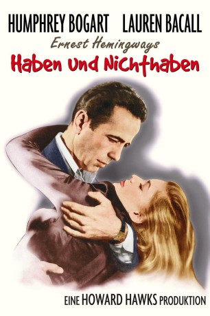
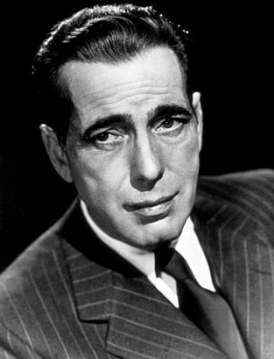
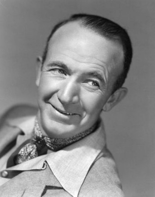
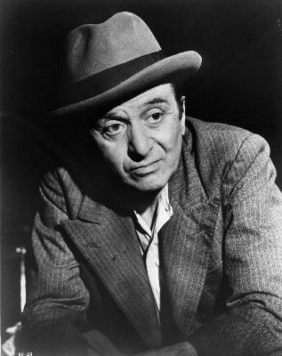
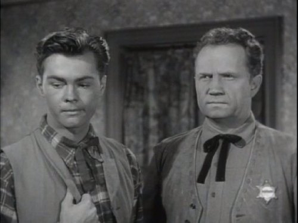
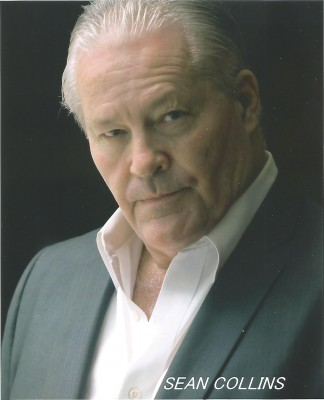
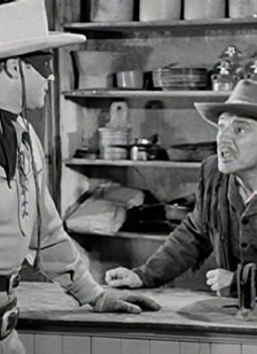
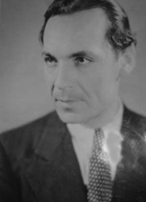
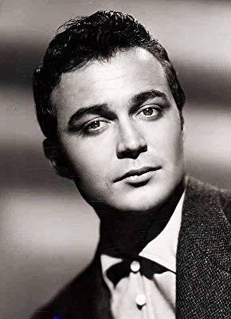
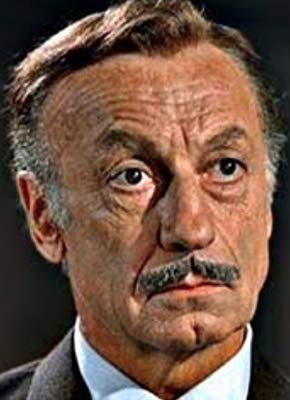

#11834 Haben und Nichthaben
Alternativ: To Have and Have Not (Englischer Titel)
 
 IMDB-Wertung: 7.9 / 10
IMDB-Wertung: 7.9 / 10  Tomatometer: 97
Tomatometer: 97  Metascore: 0
Metascore: 0 
Eine der größten Liebesgeschichten des 20. Jahrhunderts ist diesem Film zuzuschreiben: Das spätere Ehepaar Humphrey Bogart und Lauren Bacall lernte sich während der Dreharbeiten kennen. Bogart spielt darin den romantischen Helden Harry Morgan, der sich vom zynischen Beobachter zum aktiven Kämpfer wandelt. Morgan, Besitzer eines Kabinenbootes auf der Insel Martinique, wird von dem Gaullisten Gerard gebeten, einen französischen Untergrundkämpfer einzuschmuggeln. Morgan weigert sich, Politik ist nicht seine Sache. Seine Meinung ändert sich, als er die junge Amerikanerin Marie kennen lernt. Um ihr ein Flugticket zu kaufen, nimmt er den abenteuerlichen Job an. Nach einer Vorlage von Ernest Hemingway entstand ein Film voller Dramatik und erotischer Spannung.
Jahr: 1944
Dauer: 95 Minuten
FSK: 12
Land: USA Studio: Warner Bros.Tonspuren: DD5.1 - ,
Untertitel:
Auflösung: 720p (960x704) Größe: 2211 MB
Genre: Thriller, Komödie, Abenteuer, Krieg, Liebe,
Regisseur: Howard Hawks
Drehbuch: Ernest Hemingway, Jules Furthman, William Faulkner, Cleve F. Adams, Whitman Chambers
Soundtrack: Franz Waxman
Darsteller:
-  Humphrey Bogart als Harry Morgan
-  Walter Brennan als Eddie
 Lauren Bacall als Marie 'Slim' Browning
Lauren Bacall als Marie 'Slim' Browning- Dolores Moran als Mme. Hellene de Bursac
- Hoagy Carmichael als Cricket
- Sheldon Leonard als Lt. Coyo
-  Marcel Dalio als Gerard aka Frenchy
-  Walter Sande als Johnson
-  Dan Seymour als Capt. M. Renard
- Joy Barlow als (uncredited)
- Adrienne D'Ambricourt als Cashier (uncredited)
-  Jean De Briac als Gendarme (uncredited)
-  Alphonso DuBois als Bit (uncredited)
- Elzie Emanuel als Black Child (uncredited)
-  Lance Fuller als Bit Part (uncredited)
-  Maurice Marsac als Gaullist (uncredited)
- Ron Randell als Naval Ensign (uncredited)
- Pedro Regas als Civilian (uncredited)
- George Suzanne als Gaullist (uncredited)
- Walter Szurovy als Paul de Bursac
- Aldo Nadi als Renard's Bodyguard
- Audrey Armstrong als Dancer (uncredited)
- Juliette Ball als Black Woman (uncredited)
- Eugene Borden als Quartermaster (uncredited)
- James Burross als Bit Part (uncredited)
- Jack Chefe als Guide (uncredited)
- Louise Clark als Waitress (uncredited)
- Marcel De la Brosse als Sailor (uncredited)
- Fred Dosch als Gaullist (uncredited)
- Fred Farrell als Headwaiter (uncredited)
- Harold Garrison als Black Child (uncredited)
- Janette Grae als Rosalie (uncredited)
- Suzette Harbin als Waitress (uncredited)
- Margaret Hathaway als Waitress (uncredited)
- Frank Johnson als Bit Part (uncredited)
- Hal Kelly als Detective (uncredited)
- Sir Lancelot als Horatio - Crewman (uncredited)
- Keith Lawrence als Flirtatious Frenchman (uncredited)
- Oscar Loraine als Bartender (uncredited)
- Paul Marion als Beauclere - Gaullist (uncredited)
- Louis Mercier als Gaullist (uncredited)
- Chef Milani als Chef at Marquis Hotel (uncredited)
- Gussie Morris als Waitress (uncredited)
- Kanza Omar als Waitress (uncredited)
- Jack Passin als Flirtatious Frenchman (uncredited)
- Margaret Savage als Waitress (uncredited)
- Patricia Shay als Mrs. Beauclere (uncredited)
- Milton Shockley als Bit Part (uncredited)
- Emmett Smith als Emil - Bartender (uncredited)
- George Sorel als French Officer (uncredited)
Datei: X:\1900-1949\Haben und Nichthaben (1944, FSK12, 960x704).mkv seit 01.10.2019
Festplatte: Gemischt-01+Anime
 Es gibt insgesamt 80 Filme in der Gruppe '1900-1949'
Es gibt insgesamt 80 Filme in der Gruppe '1900-1949'